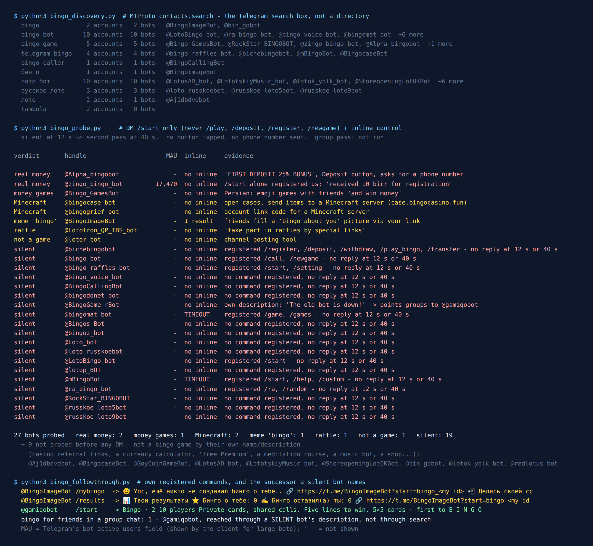
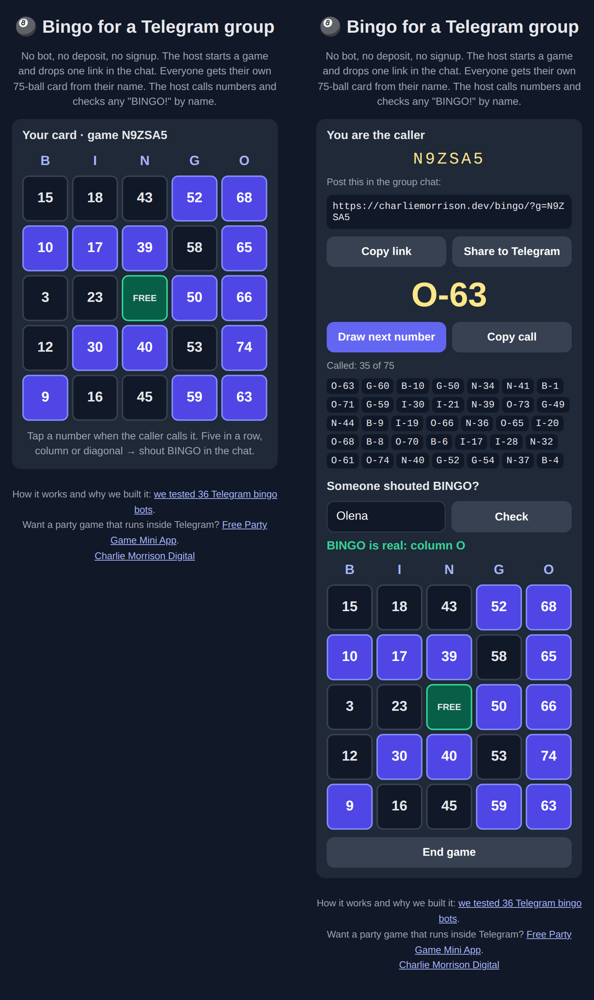

Telegram Bingo Bots: 36 Found, 1 Plays Bingo With Friends
Bingo should be the easiest game in the world to move into a group chat. Nobody has to keep a secret. Each player has a card, someone reads out numbers, and the first person with a full line shouts. A Telegram group already has everything except the cards and the caller, and a bot can do both.
So on the night of 30 September 2026 I typed “bingo” into Telegram’s search, along with nine other spellings, and messaged every bot that came back looking like the game. 36 bots came back. 9 were plainly something else and I never messaged them. Of the 27 I did message, 19 said nothing at twelve seconds and again at forty. 8 answered, and not one of the 8 was a bingo game for a group of friends. Two run on real money. Two were Minecraft. One was a meme.
The one real group bingo bot I found, I reached by accident, through the description of a bot that had stopped answering. It is further down, next to the free no-bot version I built after the census.

How the list was built
The list came from the platform, not from a directory. Telegram’s search box calls an API method named contacts.search, and it only returns accounts that exist right now. I fixed ten queries before measuring anything: bingo, bingo bot, bingo game, telegram bingo, bingo caller, the Russian бинго, three Russian lotto queries (лото бот, русское лото, лото), and tambola, which is what the 90-ball game is called in India.
The lotto queries are there because the Russian-speaking cousin of the game, русское лото, works the same way: numbered cards, a caller, first full line wins. Someone looking for it in Telegram types лото, not “bingo”. tambola found two accounts and no bots at all.
9 accounts were out before I sent a single message, each on the strength of its own description. The biggest account in the whole set was one of them: a bot named “🇺🇦 КАЗИНО” with 38,958 monthly users and a description that is nothing but casino referral links, two of them advertised as “без верифікації”, without verification. It matched the query “лото”. The rest ranged from a currency calculator to a meditation course and a “free Telegram Premium” link. That left 27.
Each of those got the same reads: /start in a private chat and an inline query as a liveness check. Nothing else. I never sent /play, /deposit, /register or /newgame, never tapped a button and never shared a phone number. Anything silent at twelve seconds got a second pass at forty.
19 of 27 said nothing, twice
Most of the list is quiet, and the quiet ones are not all junk. @mBingoBot describes itself as “a Bingo game bot” and registered a /custom command. @LotoBingo_bot says “Lotto Bingo for your chat!”, which is exactly what this page is looking for. @BingoCallingBot is called Bingo Caller. All three of the Russian lotto bots that had the game in their name were silent too.
One silent bot is worth a closer look for what it registered. @bichebingobot, “Sample Telegram Bingo”, has commands for /register, /deposit, /withdraw, /play_bingo, /transfer and /balance. It never answered, but you can read its intentions from the menu, and they are the same as the two bots below that did.
A bot can be down for an evening. But the pattern matches the earlier censuses on this site: a name that fits the search costs nothing to register, and keeping the server behind it running is the expensive part.
Want something for the group that is definitely switched on?
The free Party Game runs inside Telegram itself, with nothing to add to your group and nothing reading the chat: Would You Rather, Never Have I Ever, Truth or Dare and quiz rounds, from two players up. It has no bingo mode. For bingo, the free tool further down this page does the job.
Open the Party Game No Telegram? It runs in a browser too: charliemorrison.dev/party-gameThe two that run on real money
The busiest bingo bot that answered was @zingo_bingo_bot, “Zingo Games”, with 17,470 monthly users by the counter Telegram attaches to the bot’s account. Its tagline is “Tap-Play-Win-Repeat”. My /start got a language menu (English, Amharic, Oromo and Tigrinya) and then, with no further input from me, a second message: “You have received 10 birr for registration.” Pressing Start had opened an account with a balance in Ethiopian birr. I didn’t go further.
@Alpha_bingobot, “Alpha Games”, was blunter. Its welcome, in Amharic, carries one line in English: “FIRST DEPOSIT 25% BONUS”, above buttons for the game, Deposit, Withdraw and Balance. The next message asked for a phone number to register, next to a help button asking how to deposit birr. Its description, in my translation, promises income from playing various games, weekly prizes and promo codes.
Then there is @Bingo_GamesBot. It writes in Persian, and its welcome says, in my translation, that you can play emoji games with your friends one-on-one or in groups “and win money”.
I’m not linking any of these, and I didn’t deposit anything to see how they play. Bingo is a lottery-shaped game, and a lot of what the search box returns for it is gambling with a game’s name on it. If someone in your group suggests one of these “for fun”, read the first message before anyone presses a button: a bot that credits you money for pressing Start is not built for a family quiz night.
The rest that answered
Two were about Minecraft. @bingocase_bot offers to “open cases” and send the items straight to a Minecraft server, through a web app on a domain called bingocasino.fun. @bingogrief_bot replied to /start with “unknown code” and told me to type /link telegram on the server first: it links a game account to Telegram and does nothing else.
@BingoImageBot is the only one whose “bingo” is about people. It gives you a personal link; your friends open it and fill in a picture-bingo about you (“find out how others see you”). Its own /mybingo and /results commands confirmed the mechanics: nobody had filled one in about me yet, and the bot asked me to share the link. It is a meme format, not the numbers game.
The last two were a raffle bot and a channel-posting tool.
The one that plays bingo with friends
Back among the silent bots, @BingoGame_rBot, “Bingo game bot”, never answered my /start. Its description explains why: “📢 The old bot is down! Upgrade your group by adding our new and improved bot right now: @gamiqobot ✨”.
So I sent /start to @gamiqobot on 1 October. It answered at once with a menu of three games. Bingo is one of them, described in its own words as “2–10 players. Private cards, shared calls. Five lines to win. 5×5 cards, first to B-I-N-G-O.” The setup is two steps: add the bot to your group as an admin, then start a game and invite your friends. Its other two games are a two-player number duel and hangman.
Two caveats, both honest. First, I didn’t play it. The account I test from can’t create groups, and I don’t borrow strangers’ groups to test bots in, so the description above is the bot’s own, not my review. Second, “five lines to win” is a longer game than most people mean by bingo: you need a row, column or diagonal for each of the five letters, not just one line. Good for a long evening, slow for a quick round.
And notice how I found it. gamiqobot doesn’t contain the word bingo, so none of my ten queries returned it. The only route to the one working group bingo bot in this census went through a dead bot’s description. That is the real state of Telegram bingo in autumn 2026: the working thing exists, and the search box hides it behind a casino.
What a bingo bot actually has to do
The standard 75-ball game is simple to describe. A card is a 5×5 grid under the letters B-I-N-G-O. The usual rules restrict each column to fifteen numbers: B holds 1 to 15, I 16 to 30, N 31 to 45, G 46 to 60 and O 61 to 75, and the centre square is free. There are about 5.5 × 1026 possible cards, so a group will never see two the same by chance.
In a chat, the game needs three things, and only one of them is hard:
- A different card for every player. Easy: generate it.
- A caller who never repeats a number. Easy: shuffle 1 to 75 and read them out in order.
- A way to check a claim. This is the hard part. When someone shouts “BINGO!”, the caller has to see the card as it was dealt, not as the player remembers it. In a living room you walk over and look. In a group chat, nobody can look at anyone else’s phone.
A bot solves the third problem by holding every card itself. It also has to live in the group, see who joined and post the calls, which is why the one working bot above asks to be made an admin. And if it wants to send each player their card privately, the player has to start a chat with it first, because, in Telegram’s own words, “Bots can’t start conversations with users.” A bot that needs all of that plus a server that stays up is exactly the kind that goes silent, as 19 of the 27 above show.
Bingo in a Telegram group without any bot
There is a way to solve the third problem without a server: make the card a function of something everybody can see. If a card is generated from the game’s code plus the player’s name, then anyone who knows the code and the name can rebuild the exact same card at any moment. The player doesn’t have to send it anywhere. When they shout, the caller types their name and sees what they were dealt.
That is what I built after the census: charliemorrison.dev/bingo. It is a single page with no account and no bot.

How a game goes:
- The host opens the page and taps Start a new game. They get a six-character code and a link, and post the link in the group with the share button or by copying it.
- Each player opens the link and types a name. Their card appears. Everyone posts the name they used in the chat before the first call (I’ll come back to why).
- The host taps Draw next number and posts the call, “G-52”, in the chat or reads it out in a voice chat. Players tap the number on their own card. The draw uses the phone’s secure random generator and never repeats.
- Someone shouts BINGO. The host types that player’s name under Someone shouted BINGO? and the page rebuilds the card from the code and the name, marks every number called so far and says which line, if any, is complete.
Marks and the caller’s list live in each phone’s browser storage, so closing the tab doesn’t lose the game. Nothing is sent to a server, which also means the caller’s phone is the game: if the host switches phones mid-game, the list of called numbers stays on the old one.
Now the reason for posting names first. A deterministic card has one obvious way to cheat: open the link as “Olena”, “Olena 2” and “Olena 3”, watch all three cards, and claim with whichever wins. The fix costs one message per player: names are fixed in the chat before the first call, and the host only checks names that were posted. Among friends this is plenty. For a game with a prize worth cheating for, use a bot that holds the cards, or don’t play for prizes in a group chat at all.
I tested the check hardest: the card the caller rebuilds from a name matches the player’s square for square, every column stays inside its fifteen numbers, and all 75 draws come out without a repeat. Capitals and extra spaces don’t matter, so “olena” and “ Olena ” are one player.
Making a whole game night of it?
Bingo takes one round. The Telegram Party Pack is for the rest of the evening: 255 prompts for the games that need no cards at all, namely 110 Truth or Dare, 45 Never Have I Ever, 30 Would You Rather, 30 Most Likely To, 25 Paranoia and 15 Story Chain, as copy-paste text and ready-made poll blocks, with a host guide. There is no bingo in it.
Get the pack — $9.99 Or see how to run a game night in Telegram without any pack.What I could not test
No group pass. Everything here comes from private chats, from each bot’s own description and commands, and from the flags on its account. For a game played in a group that is a real gap, and it is why @gamiqobot is described in its own words rather than reviewed.
One night, ten queries. Telegram’s search returns at most fifty accounts per query and ranks them its own way. The one working group bingo bot here doesn’t match any of the queries, which tells you how incomplete a name search is. This is what a person finds by typing the game’s name, not a list of every bot on Telegram.
Silent is not dead. 19 bots said nothing twice. Some may be back next week. The date at the top of this page matters more than the list.
If you want to play tonight
- Friends, no bot, nothing to install: charliemorrison.dev/bingo. Host starts a game, posts the link, everyone posts their name, the host calls.
- It has to be a bot inside the group:
@gamiqobot, added as an admin. Expect a long game, five lines to win. - Something with less setup than bingo: the party games list covers games that hold up in a bigger group, and the two-player list covers the other end.